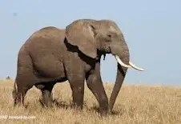
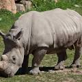

3 największe ssaki żyjące na Ziemi
Definicja ssaków:
Ssaki –
zwierzęta należące do kręgowców, charakteryzujące się głównie:
występowaniem gruczołów mlekowych u samic; zazwyczaj obecnością owłosienia; stałocieplnością.
Ranking
1.Słoń afrykański
-Słoń afrykański jest największym zwierzęciem żyjącym na lądzie.
Samica może mierzyć do 2,5 metra, a samiec nawet ponad 4 metry wysokości.
Są one zatem dwa razy wyższe od człowieka. Słoń może ważyć nawet do sześciu ton, czyli tyle co autobus!
2.Wieloryb błękitny

Płetwal błękitny – gatunek ssaka morskiego z rodziny płetwalowatych.
Największe znane zwierzę w historii Ziemi. Po raz pierwszy został opisany przez szkockiego lekarza Roberta Sibbalda w 1697 roku.
3.Nosorożec biały
Nosorożec biały – gatunek ssaka nieparzystokopytnego z rodziny nosorożcowatych.
Jest to największy z żyjących obecnie nosorożców, czwarty największy lądowy ssak. Długość ciała wynosi 340–420 cm, a masa 1350–3500 kg.